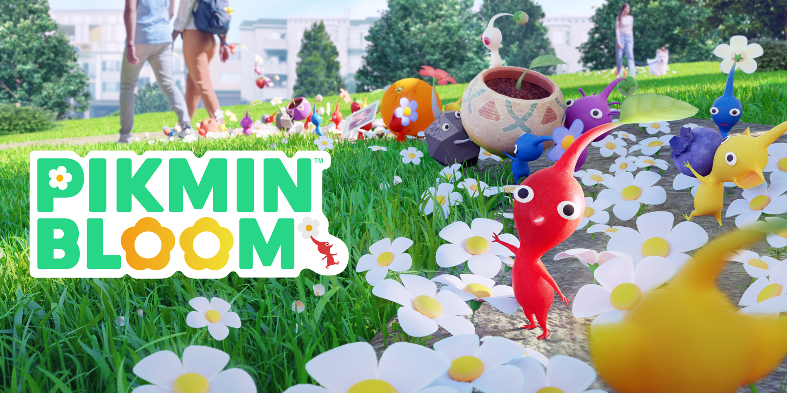
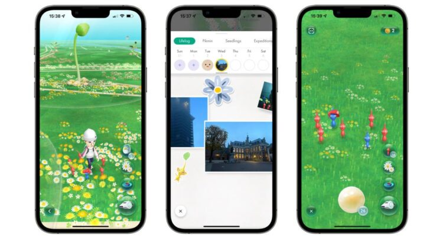

Pikmin Bloom is uit
Pikmin zijn kleine wezentjes in verschillende kleuren, met boven hun hoofd een zaadje dat langzaam uitgroeit tot een bloem. In de Pikmin-games van Nintendo gebruik je een leger aan Pikmin om planeten te ontdekken, voorwerpen te verzamelen en vijanden te verslaan om terug te keren naar huis. In Pikmin Bloom vervullen de wezentjes een iets andere rol. hoewel je ook in deze game Pikmin verzamenld, dienen ze nu vooral om de wereld wat kleur te geven enn bloemen te laten opbloeien.
Tijdens het wandelen verzamel je steeds meer Pikmin, die als een soort mini-leger acheter je aan lopen. Door naar plekken te wandelem, kun je nieuwe Pikmin ontdekken. Tijdens het wandelen wordt je pas steeds gevormd met bloemen. Ook andere spelers laten zo een bloemenpad achter, waardoor er uiteindelijk een soort tuin ontstaat, De Pikmin kunenn tijdens je wandeling ook voorwerpen verzamelen, die je kunt bekijken via de app. Op een kaart zie je dan waar je allemaal bent gewandeld hebt.
Het uiteindelijke doelis dus om de wereld te laten bloeien met planten, simpelweg door te wandelen. Je kan ook foto`s maken met je Pikmin en bijhouden in een soort dagboek. Al met al willen Nintendo en Niantic wandelen leuker maken. Spelers in Singapor en Austrailië kunnen Pikmin Bloom vanaf nu downloaden. Niantec laat weten dat de game vanaf vandaag wereld wijd uit gerold wordt, hoewel niet bekend is hoe lang het duurt voordat Pikmin Bloom in Nederland te downloaden is.